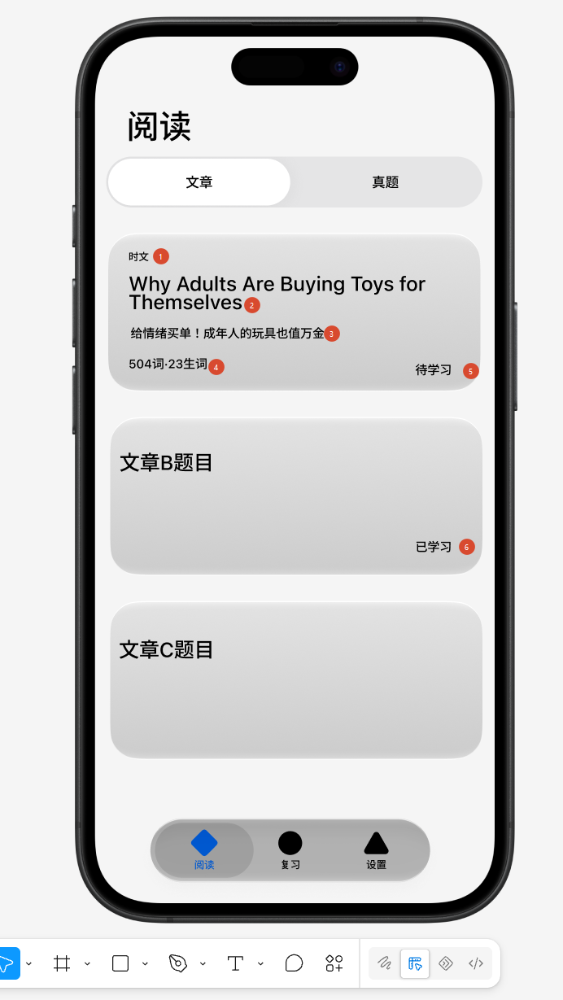
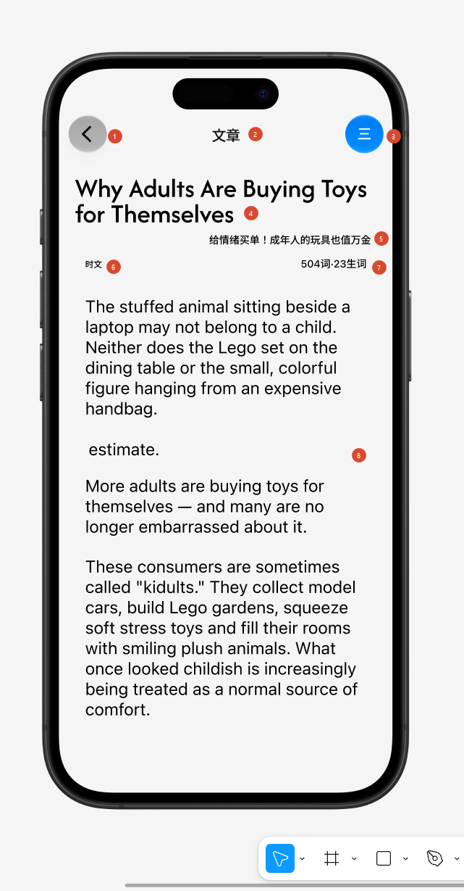
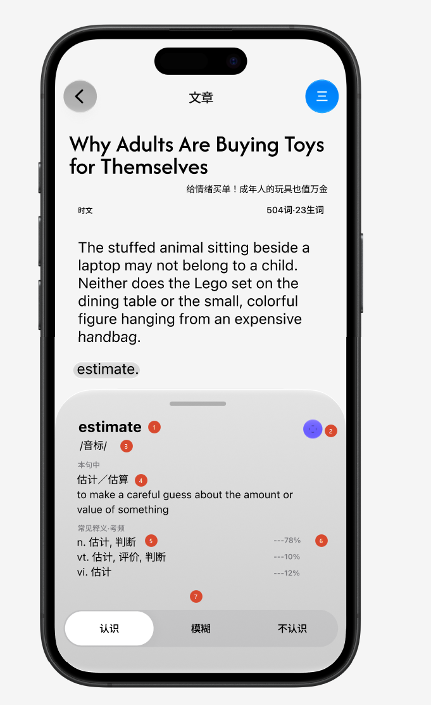

Core 已经装好，这个 Phase 只做人看得见的那一半——原生 iOS，液态玻璃。 而且只做一条链：列表 → 阅读 → 点词。
P5 把「换成安卓也一模一样」的东西全部收进了 Core， 所以这个 Phase 里不再有任何学习逻辑：复习调度、选文、难度、显示语义都算好了， 界面只负责渲染、收交互、回传事件。真正要定的是结构——哪几屏、怎么导航、 点一个词之后发生什么。视觉反而不太需要定：液态玻璃是系统渲染时生成的材质， 不是能自己画出来的风格，用对了系统组件它就是对的。
范围只有一条链：打开 App → 看见文章列表 → 点开一篇 → 读 → 点词查词与标记 → 读完。 2026-09-13 定。复习界面这个 Phase 不做——它自己是完整的一套交互 （三级提示、双向作答、当天完成判定、拼写）， 塞进同一个 Phase 就等于两个 Phase 一起验收，哪一处不对都说不清是哪一处。 设置屏做，但只有一件事：填 base URL 与设备令牌（§6）。 阅读这条链自己就是闭环：读完即记账、标记进复习队列， 这两件事在服务端照常发生，只是这个客户端暂时看不到复习那一头。
功能设计 English Reader ｜ 上一阶段 Phase 5
这件事本身值得记一笔，因为它是前五个 Phase 里没有过的工作方式。
用户不写代码也不读代码，而界面是唯一一件「说不清楚就做不对」的东西。 用的办法是：用户在浏览器里拖出草图、截图发来，工具是 m3e-canvas——一个拖 Material 3 组件的网页。
它画的是安卓的设计语言，但这不重要：草图传递的是位置、分区、层级、什么挨着什么， 这些信息跟材质无关。约定因此只有一条——位置和层级照收，控件形态全部重译。 用户摆一个「主按钮」，iOS 上该是什么形态由这边决定。
它不是一种可以画出来的视觉风格，是系统在渲染时生成的材质。
折射、镜面高光、滚动时的边缘渐隐、控件靠近时的融合与形变，都由系统按实时内容算出来，
还要跟着「减弱透明度」「增强对比度」这些无障碍开关整体变形。
所以原生的做法几乎全是「别自己画」——用系统的导航栈、标签栏、工具栏、面板，
玻璃是白送的；只有真正自定义的浮动控件才用 glassEffect，
而且要装进 GlassEffectContainer（玻璃不能采样玻璃，叠起来会糊）。
外部事实，2026-09-13 核实：Apple 官方设计资源页现在挂的是 iOS 27 的 UI Kit（Figma / Sketch）。 液态玻璃仍是同一套设计语言。P5 决定 3「只面向 iPhone 17 / iOS 26」要不要跟着动，是独立的一件事，还没定。
App 打开后落地的那一屏。

| # | 状态 | 决定 |
|---|---|---|
| 1 | 已定 | 「文章 / 真题」用一条分段控件分开。正好对上 Core 已有的两个列表（P5 决定 19：真题走 /library?source=…），内核一行不用改。 |
| 2 | 已定 | 卡片第一行是话题，不是文体。生成文章时一起落库。真题这一格显示来源（source_label，现成有）。 |
| 3 | 已定 | 卡片第二行是一句中文概括。真题暂不补，那一行留空。将来要了再批量生成。 |
| 4 | 已定 | 第三行是「504 词 · 23 待学」。「待学」= 这篇的目标词里还没进入学习流程的个数——只要标记了、进了复习队列就不再计入，不用等学会。所以它在阅读过程中会实时往下掉。真题这一格恒为 0（真题不为教任何词而写，target_count 恒为 0），留空。 |
| 5 | 已定 | 不叫「生词」叫「待学」。「生词」读起来是「你不认识的词」，而标记一个词（明确说了不认识）这个数反而减一，讲不通。「待学」也不完全贴切（不一定这些词全不认识，也不一定没有更多），但比「生词」合适，暂定。 |
| 6 | 已定 | 暂不分「今天 / 往期」，一个列表按序号排。初版可用优先，分类留到后面。 |
| 7 | 已定 | 状态只两档：待学习 / 已学习。（实际还有「还没准备好」「读了一半」「离线拿不到」，初版不表达。） |
| 8 | 已定 | 真题的四级 / 六级 / 考研再排一行分段控件，样式同第一条。排序不做，按序号——服务端已经下发了可选排序（sortable），将来接上就行。 |
| 9 | 已定 | 标签栏不加角标（复习的到期数不显示），默认落在第一格「阅读」。理由：加了臃肿。 |
| 10 | 已定 | 三张卡等高，格式完全一样，各自填各自的内容。 |
| 29 | 已定 | 标签栏保留三格：阅读 / 复习 / 设置。2026-09-13 定。（讨论过的另外两种——只留一格、不要标签栏而把设置放进导航栏齿轮——都没采用。） |
| 30 | 已定 | 复习那格点进去显示「正在开发中」，不是空屏也不是点了没反应。一个点了没动静的格子看着像坏了，说明白反而清楚。 |
| 32 | 已定 | 没准备好的文章不出现在列表里，全部就绪之后才出现。服务端照常会回 preparing（带「标注了几个 / 共几个」），界面直接过滤掉，不做进度显示。代价实测过，很小：库里 474 篇全部是 ready（真题 452 篇一篇不少），所以只有 04:00 刚生成的那几篇会短暂缺席——那天的今日包可能先显示 2 篇，一会儿变 3 篇。 |
| 33 | 已定 | 离线拿不到正文时：转圈，同时标注原因。不能只转圈——对一个离线优先的 App，无声的转圈是最糟的答案（你分不出它在努力还是已经放弃）。具体做法：转圈继续转，旁边写「离线，连不上服务器」——意思是还在重试，网一回来自己就好，不用你点。列表上暂不显示「这篇能离线读」，以后再做。 |
iOS 翻译：大标题用导航栏自带的（滚动后自动缩成小标题）； 分段控件放大标题正下方（Apple 自己就这么放）；灰底圆角卡片改成分组列表—— 内容区不用玻璃也不用色块，见 §2。标签栏在向下滚时会自动收成一小条，抬手又展开。
与主文档 §H 的一处口径：每日流程写的是「打开时先复习」， 而决定 9 让 App 默认落在阅读。两者不冲突（§H 描述的是建议的学习顺序，不是 App 落哪屏）， 但收尾时要把那句话对齐，免得文档和实物说两样。
点列表里任一篇进入。这一屏最重要的决定是什么都不标。

estimate 是用户放进去的，为了演示下一屏的查词面板。| # | 状态 | 决定 |
|---|---|---|
| 11 | 已定 | 正文不画系统预标的记号——目标词、超纲词、派生词、专有名词全不画。理由：满屏记号之后文章就不是文章了，妨碍阅读。不违反不变量：那条写的就是「静止要不要标出来是各客户端自己的呈现决定」。 |
| 12 | 已定 | 只画你自己标记过的词，暂用虚线。理由不是好看：你按下去了，屏幕上得有反应，否则同一个词会重复点开——「标记后正文毫无反应」在 P2 是被当成 bug 记进坑列表的。两档（不认识 / 模糊）暂时都用虚线不分，想好画法再分。 |
| 13 | 已定 | 「读完了」按钮放在正文末尾。按下退回列表，那篇当场变已学习。这条是跨 Phase 不变量的落点——记账只在读完那一刻发生。不用「滚到底自动算读完」：读完是要记账的动作，不该由滚动手势代劳。 |
| 14 | 已定 | 收尾界面不做（按下「读完了」中间什么都不显示）。已记进主文档 §M，连同它的起因与风险。 |
| 15 | 已定 | 自动跳回上次位置，并提供右下角浮动「回到顶部」（上箭头）。这是 article.progress 的落点——P5 结束时唯一没被真实流程走过的一条事件。 |
| 16 | 已定 | 导航栏中间不显示来源（返回按钮本身会带上一屏的名字）；右上角改成 ··· 玻璃圆钮，不用实心强调色——那留给主要动作。 |
| 17 | 已定 | 菜单内容待定，先把按钮做出来。候选：字号、深浅色、这篇里我标记过的词一览、清除这篇缓存。 |
| 18 | 已定 | 头部信息块（标题 / 概括 / 话题 / 词数）跟正文一起滚走。 |
全天点得最多的东西。从底部升起的面板，正文里那个词同时高亮。

面板从上到下：单词、朗读按钮、音标、本句中的义项（中文 + 英文概念定义）、 常见释义 · 考频（左边一行一个义项，右边对应的考频百分比）、 最底下一条三档滑块：认识 / 模糊 / 不认识。
new、遇见记录保留，
这是现成的不变量）。
| # | 状态 | 决定 |
|---|---|---|
| 19 | 已定 | 标记是按义项记的，滑块标的是「本句中」那一条义项。词池里存的是「estimate 的第 2 个义项」，不是「estimate」。 |
| 20 | 已定 | 不显示「你标过这个词的别的义项」。契约里 glossary.marks 特意把全部义项的标记都发下来就是为了这个，初版不做，代价记进了 §M。 |
| 21 | 已定 | 义项列表按真题考频降序排，考频缺失时用词典原始顺序。绝不按义项序号排——那个序号是模型猜的（is_exam_key 恒为 0 就是因为这个）。排序在服务端按数据算，义项将来改了排序自动跟着改。 |
| 22 | 已定 | 词性（n. / vt. / vi.）加个字段带出来。senses.pos 库里就有，只是契约没带，不用重新生成。 |
| 23 | 已定 | 「本句中」那块保留，跟底下列表重复没关系——上面给完整的中英文定义，列表给短释义，用途不同。 |
| 24 | 已定 | 面板开着时正文不能滚，一滑就收起面板。 |
| 25 | 已定 | 点下一个词时原地换内容，不关掉重开。动画以后再考虑。 |
| 26 | 已定 | 面板按内容自适应高度，最多半屏；装不下的在面板内滚动，而三档滑块钉在底部，不跟着滚。 |
| 27 | 已定 | 朗读用 iOS 自带的离线语音合成，这个 Phase 就接上（不联网、不花钱）。 |
| 28 | 已定 | 超纲词不在正文做记号，改在面板里单词右边一行小字提示。正文不画记号之后，面板是唯一能说这件事的地方。 |
没有草图——它只有两个输入框，而且填一次之后大概一年不会再打开。
原本这个 Phase 不打算做设置屏，但有一样东西绕不过去： 设备令牌是管理控制台签发、一次性显示的，客户端总得有地方接住它， 否则连不上任何东西。
| # | 状态 | 决定 |
|---|---|---|
| 31 | 已定 | 设置屏只做一件事：填 base URL 与设备令牌。缓存管理、占用统计、「全部下载」全部不做——那些等复习界面那个 Phase 一起。 |
跨 Phase 不变量写着「词组是一个整体，就按一个整体渲染——这条对所有客户端都成立」。这个 Phase 不照做。
理由：词组识别本身的判定质量还不可信——P2 实测 198 个序列在不同句子里得到不同判定，召回缺口记在 Phase 2 文档 §18。在判得准之前，把它端到界面上 只是把不可信的东西显示得更确信。
account for 里的 account 会按普通单词处理，释义可能不贴合——
in_phrase 那条 Core 返回了但界面不读；
account 在 account for 里可能已经被标成了「解释、说明」那个义项。
能减轻多少要抽查才知道。
后端一行不用改：Phrase 契约、整体命中、in_phrase 释义全部留着，
Core 里也照常实现（P5 的命令行客户端真跑过）。关掉的只是界面这一层。
真要打开，界面这边的工作量是「高亮能跨两个词」加一个字段的读取。
这个 Phase 主要是界面，但下面几处后端改动躲不过。全部是加字段，不碰老字段，不违反铁律 5。
LibraryArticle 与 ArticleBody。服务端算（架构铁律 1）。senses.pos 已有数据，加进 Sense 契约。reading 迁移 6、generation 迁移 4），
但 Swift 契约类型还没重新生成——那要跑 export_contract.py（它会把服务起来）
和 generate_swift_types.py（它要 Swift 工具链）。
ArticleCard.init(library:)，
那里三行注释写着改成什么。界面一行都不用动。
范围就是那一条链。下面这些不是「以后有空再说」，是这个 Phase 的边界。
下面每一条都属于这个 Phase，得在动手前定下来。
2026-09-13 定：TestFlight 推迟到全部功能做完，所以这个 Phase 的验收只能在模拟器上。
能用的现成条件：macos-26 runner 预装 iPhone 17 模拟器与 iOS 26 运行时（P5 §4 已核实）， 公开仓库不计费。三条路，从便宜到贵：
xcrun simctl io booted screenshot，打包成 artifact 下载。便宜、可重复、有记录。日常看效果用这个。simctl io booted recordVideo，把一段操作录下来。比截图多一样东西：看得出动效和节奏。2026-09-13 写完，一行都没编译过——这台机器上没有 Xcode， App 层在 Windows 上编不了。下一步是远程那件事。
| 在哪 | 是什么 |
|---|---|
client/App/project.yml | XcodeGen 的工程描述。工程文件不提交——它是机器产物，这台机器也读不懂；要看结构看这份 YAML |
App/Sources/ERApp.swift | 入口与三格标签栏，复习那格是「正在开发中」 |
App/Sources/AppModel.swift | 三类本地存储、发件箱、同步引擎；外加列表的离线退路 |
App/Sources/Connection.swift | base URL 进 UserDefaults，令牌进钥匙串，界面上只显示后四位 |
App/Sources/IOSTransport.swift | 手机这一份传输实现（Core 只定义协议） |
App/Sources/LibraryScreen.swift | 第一屏：两条分段、卡片、下拉刷新、离线那一行 |
App/Sources/ArticleCard.swift | 三个新字段唯一的落点 |
App/Sources/ReaderScreen.swift | 第二屏：正文、读完了、回到顶部、··· |
App/Sources/ReaderModel.swift | 标记、事件、进度、跳回上次位置 |
App/Sources/ArticleText.swift | 正文按段落渲染 + 按字符命中的点词 |
App/Sources/LookupSheet.swift | 第三屏：点词面板与三档滑块 |
App/Sources/Speech.swift | 朗读，系统离线语音合成 |
App/Sources/SettingsScreen.swift | 第四屏：只有连接 |
UITextView 而不是 SwiftUI 的 Text。
要的是两样 Text 给不了的东西：按字符命中（点哪个词选哪个词）
和真正的排版断行。按段落切块而不是按句子——一句一块的话每句都另起一行，
那不是文章是句子列表；段落同时也是能锚定的东西，所以「跳回上次位置」
和「读到第几句」都有地方挂。
Section 的事。
NSAttributedString 的背景属性画不出圆角，要圆角就得自己画一层。
.buttonStyle(.glass) 与 .glassProminent、
onGeometryChange、scrollPosition(id:) 配
scrollTargetLayout、面板的 presentationBackgroundInteraction
是否真能让点击穿到正文上、以及 closestPosition 在 TextKit 2 下的命中精度。
这一串正是第一次编译和第一次上手要查的清单。
2026-09-13。这个 Phase 结束时没有跑过验收清单——那动了铁律，所以理由和代价都写明。
.buttonStyle(.glass)、onGeometryChange、scrollPosition(id:)、presentationBackgroundInteraction、TextKit 2 下的 closestPosition§11 的第 3 条（Tailscale + 屏幕共享，人连进 runner 亲手点）试过，失败了。 经过照实记，因为它是「以后还想再试」时唯一有用的东西：
| 试了什么 | 结果 |
|---|---|
Tailscale 加入 tailnet、kickstart 开屏幕共享 | 成了。5900 端口通，握手回 RFB 003.889 |
| TightVNC 连 | 连上，一片黑 |
caffeinate + pmset 禁睡眠、关屏保后重连 | 还是黑 |
| RealVNC、TigerVNC | 都黑 |
让 runner 自己 screencapture 一张 | 桌面是好的——Simulator 开着、App 在跑、Dock 和菜单栏都在 |
没再往下追：再猜就是一轮十几分钟地烧，而它要解决的问题（看一眼布局对不对） 有更便宜的答案。UU 远程、ToDesk 那类装不上，死结在 macOS 的录屏权限要在图形界面上点「允许」—— 而我们正是因为看不见界面才要装它。苹果自带的屏幕共享不吃这道权限，所以只有它开得起来。
还剩一条没试的：在 runner 上跑 noVNC（浏览器里的 VNC 客户端，编码集跟桌面客户端不同）。 留着，不是现在的事。
ios 上攒着，TestFlight 验收之后一次合回 main。
代价是这期间 main 上看不到界面的任何进展，
回头查「某一处是怎么来的」要去 ios 的历史里翻；
换来的是 main 上每一个提交都是验过的东西。
看到 main 落后不要去「修」它——那是有意的。
ArticleCard.init(library:) 一处。
后端那半边验过是通的：真调了一次 /v1/client/library，
pending_count 算出来是 25（一篇 25 个目标词，一个都还没标过）article.progress 仍然没有被任何客户端发过。
P5 结束时它是唯一的缺口，P6 写了发它的代码，但没跑过——所以缺口还在，
只是从「没有代码」变成了「有代码没跑过」